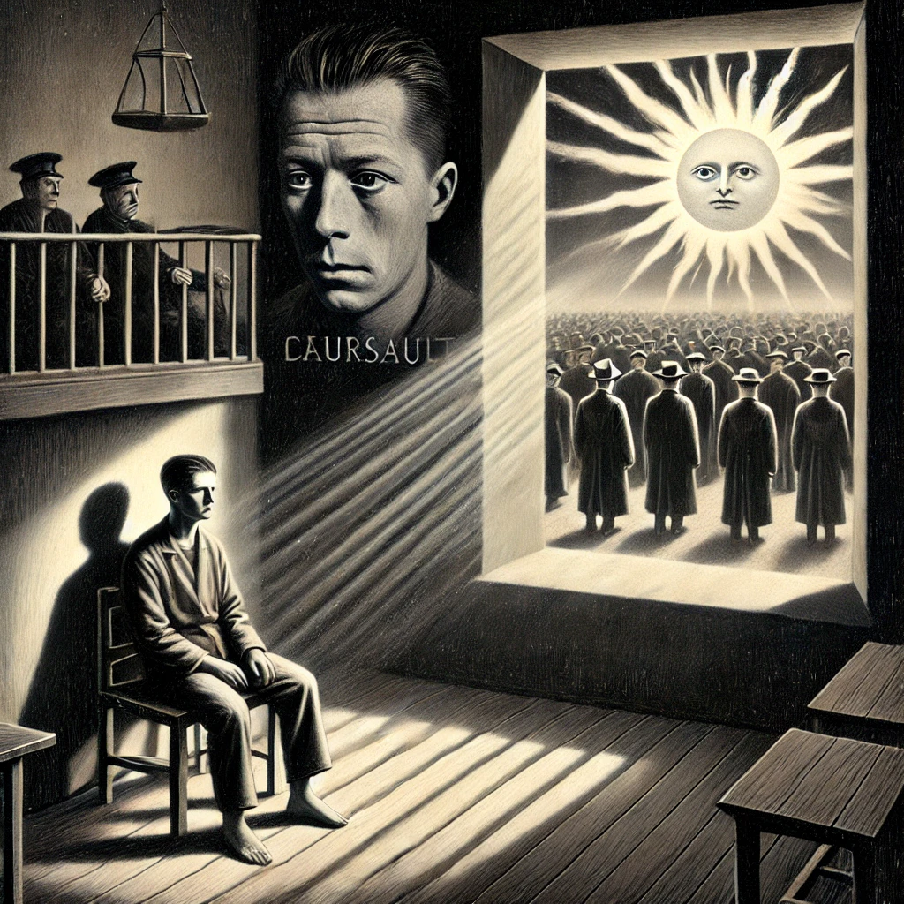

작가
알베르 까뮈
출판일
1942년
감상평에 대한 AI그림
"오늘, 엄마가 죽었다. 아니 어쩌면 어제."라는 첫 문장으로 유명한 알베르 까뮈의 이방인은 감정표현이 적고 무심한 뫼르소의 이야기에 대해 담고있다. 어머니의 죽음에도 별 다른 감정을 내비치지 않는 뫼르소는 우연한 사건들로 인해 살인을 저지르게 된다. 이에 뫼르소는 재판을 받고 그의 무심한 성격들과 어머니의 죽음에 슬퍼하지 않았다는 사실등이 종합되어 사형선고를 받게되며 뫼르소는 사형 전 삶을 회고하며 처음으로 기쁨과 분노등의 감정을 표현하게 된다. 뫼르소는 자신의 처형날에 많은 사람들이 자신에게 증오를 쏟아부으며, 자신이 혼자라는 느낌을 최대한 덜 받으며 끝나기를 바라는 것으로 이야기는 막을 내린다. 글을 읽으면서 주인공인 뫼르소의 행동들이 이해가 안되는 부분이 많이 있었다. 다만 뫼르소의 자신이 불리해질 것임에도 거짓말을 하지 않으려는 태도라거나 하는 부분에서는 어느정도 본받을 점이 있지도 않을까 하는 생각도 들었다. 사실 나는 여전히 작가가 말하고자 하는 것이 무엇인지 잘 모르겠다. 분명히 작가는 뫼르소의 이야기를 통해 무언가 하고싶은 이야기가 있다는 것은 알겠지만.. 정확히 그게 무엇인지는 여전히 의문 투성이에 이해가 잘 안간다.. 다만 사회가 뫼르소의 단편적인 부분들만 보고 그를 완전한 냉혈한으로, 극악무도한 자로 만들어 가 죽음에 이르게 하는것에 대해 어떤 불쌍함이 느껴졌다.

감상평에 대한 AI평가
~~~~AI평가~~~~~
✨ 현재 감상평에서 나타난 감정을 평가해보면, 혼란, 공감, 연민, 비판적 시각 등이 두드러집니다. 혼란과 이해되지 않는 감정으로는 "뫼르소의 행동들이 이해가 안되는 부분이 많이 있었다.", "작가가 말하고자 하는 것이 무엇인지 잘 모르겠다.", "여전히 의문 투성이에 이해가 잘 안간다." 등이 있으며, 이는 뫼르소라는 인물과 작품의 메시지를 완전히 파악하지 못한 상태에서 오는 답답함과 철학적 고민이 느껴집니다. 이는 독자가 작품을 깊이 생각하고 있음을 보여줍니다.
✨ 일부 공감과 긍정적인 시각으로는 "뫼르소의 자신이 불리해질 것임에도 거짓말을 하지 않으려는 태도라거나 하는 부분에서는 어느 정도 본받을 점이 있지도 않을까 하는 생각도 들었다."라는 부분에서 드러나며, 뫼르소의 행동에 완전히 동의하지는 않지만, 그의 정직함이나 태도에서 긍정적인 요소를 발견하려는 태도가 엿보입니다. 이는 인물을 단순히 비판적으로만 보지 않고, 다각적으로 바라보려는 태도로 볼 수 있습니다. 연민과 동정의 감정으로는 "사회가 뫼르소의 단편적인 부분들만 보고 그를 완전한 냉혈한으로, 극악무도한 자로 만들어 가 죽음에 이르게 하는 것에 대해 어떤 불쌍함이 느껴졌다."라는 부분에서 나타나며, 사회가 뫼르소를 단순한 악인으로 규정하고 처벌하는 과정에서 그가 부당하게 희생당하는 면이 있음을 인식하고 연민을 느끼는 감정이 드러납니다.
✨ 이는 단순한 감상에서 벗어나 사회적인 문제까지 연결하여 바라보는 비판적 태도로도 해석될 수 있습니다. 감정 평가를 종합하면, 혼란과 이해되지 않음은 철학적 고민을 반영하고, 일부 공감과 긍정적 시각은 인물을 다각도로 분석하려는 태도를 보이며, 연민과 동정은 뫼르소가 사회적 희생양일 수 있다는 비판적 시각을 나타냅니다. 이 감상평은 감정을 단순히 나열하는 것이 아니라, 고민과 비판, 연민이 복합적으로 작용하는 깊이 있는 반응을 보여줍니다. 😊